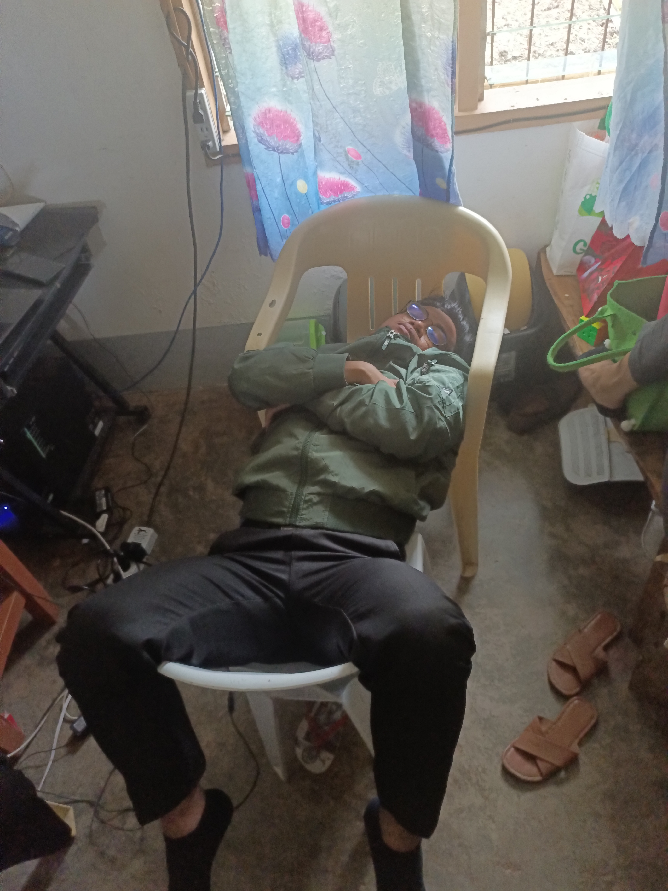
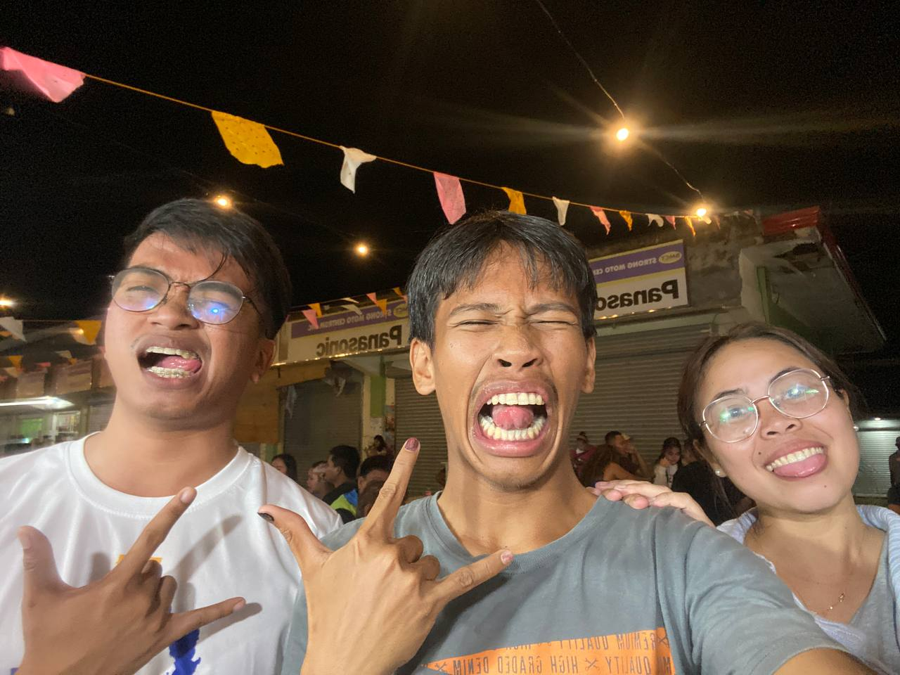

A Heartfelt Thank You



“Teachers plant the seeds of knowledge that last a lifetime.”
It just pains me that I will no longer be seeing you in the same campus, specificially in the SSLG Office doing works, resting, chitchating, making exams, listening to
my rants, or even sleeping. For almost 2 years, We've shared so many memories together na sir, mga kabuang natu, sa mga laag natu, mga jokes nga grabe dili malikayan moo katawa jud, and ofcourse mga secrets nga nabulgar HAHHAHHAHA. This is just
few days after graduation but it already felt like I'm alone, having heavy heart. May you never forget me sir ha, I will miss youso muchh HUHUHUHHHU. Si kinsa nalang mn ay mo ingun nahu nga
Naunsa ka pres? nakay problema pres? Ga luya lagi ka pres? Okay rka pres? Training ta pres! Grabe pres bay!, Kumusta naman ka pres? after days nga wala nagkita.
Nasanay akong nandyan ka lagi sir, I cant picture a school nga wlaa ka bayyy, Im not ready pajud diayy HUHUHUHUHHHU.
I wish and pray for you always po sir, may you always bring laughter to your next students. If life become so hard and harsh, just pray and breath deep. Gonna miss you so much sir
HUHUHUHHUHUHUHUHH
As I write these part of message, tears suddenly went down my eyes. We will be taking different paths now, you choose to go to other country for your career, ubos bilib
ko sayo sir!
I will pursue college and work hard so that I can makse you proud someday.
I will miss you tons and I love you always Sir!!
This has been your not so buotan nga president, signing off.
Forever grateful,
Jan Florence Cairel